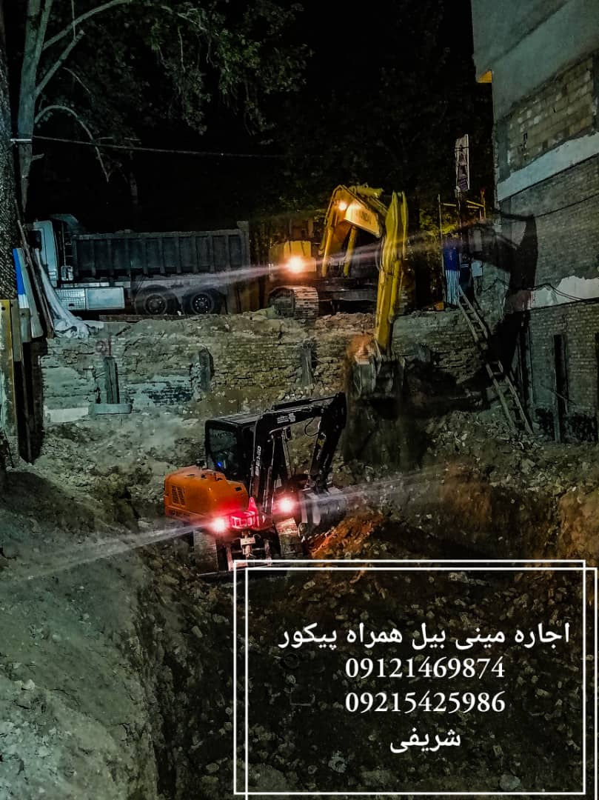

خاکبرداری شریفی
در خاکبرداری شریفی انجام حفر کانال و پی کنی با پاکت های 60 و 80 سانتی و تخریب بتون و شفته با دستگاه پیکور انجام می شود همچنین شما میتوانید قرارداد های خود را به صورت شیفتی ، متری یا کنترات منعقد نمایید.
شرح فعالیت
پیمانکاری شریفی آماده انجام تمامی عملیات خاکبرداری و گود برداری در تمامی نقاط تهران میباشد.
